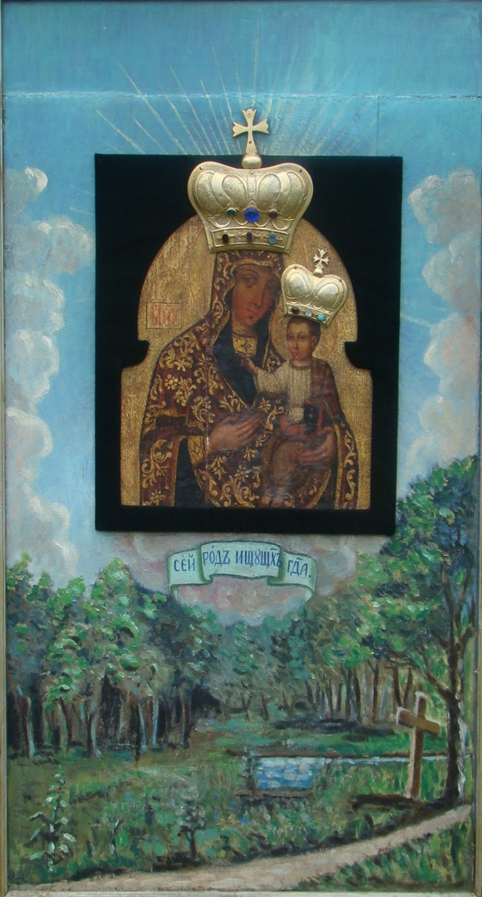

Чудотворна ікона «Богородиця-Одигітрія»
З історією Свято-Троїцького монастиря та церкви в Липівці тісно пов'язана чудотворна ікона «Богородиця-Одигітрія» — одна з найважливіших духовних та історичних святинь краю. За переказами, після закриття монастиря і перенесення монастирської церкви до села ікону також перенесли до храму. У храмі Воскресіння Христового ікона зберігалася над престолом.
У 2003 році її вперше зняли та передали на реставрацію художнику-реставратору Валерію Твердохлібу. Дослідження виявило чотири живописні нашарування. Найдавніше з них дало підстави датувати написання ікони XVII століттям, а оновлення, здійснене у XVIII столітті, засвідчило використання характерних для того часу технік і декоративних елементів. У XIX столітті ікону було вмонтовано у щит із зображенням монастирського краєвиду, на якому відтворено старий дуб, джерело та дорогу.
У 1887 році ікона була увінчана двома срібними, позолоченими коронами — окремо на головах Богородиці та Дитятка Ісуса. До того часу корони були лише намальовані. На коронах закріплено дев'ять коштовних каменів, а напис на короні Богородиці пов'язують із пожертвою Анелі Майковської.
Від 2003 року ікона стала центральною святинею щорічної молитовної процесії, яка відбувається щороку 6 липня, напередодні свята Різдва Івана Хрестителя. Парафіяни Липівки та навколишніх сіл вирушають до давнього монастирського місця біля старого дуба та джерела, з яким пов'язано перекази про історію ікони. Вода з цього джерела в народних переказах вважається цілющою, зокрема при очних недугах.
Ікона «Богородиця-Одигітрія» є не лише пам'яткою сакрального мистецтва XVII століття, а й символом духовної спадщини Липівки, що зберігає пам'ять про колишній монастир і підтримує живу молитовну традицію місцевої громади.